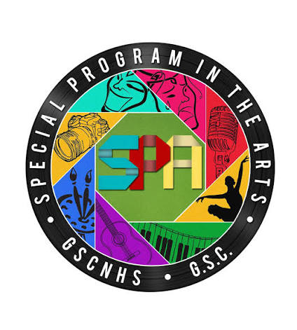

Special Programs
DepEd special programs are designed to enhance learners’ skills, interests, and career pathways through specialized curricular, technical-vocational, and inclusive education initiatives.

Special Program in Atrs (SPA)
Special Program in Sports (SPS)
Special Program in Journalism (SPJ)
Special Program in Science, Technology, and Engineering(STE)

Special Program in Technical Vocational Education (SPTVE)

Special Needs Education (SNED)
Get 100 Online Courses for Free
Registration To Get It
18
Register as a JEWEL
Register as a JEWEL
23
Register as a ICT
Register as a ICT
06
Register as a Journalism
Register as a Journalism
58
Register as a Techvoc
Register as a Techvoc
Create Free Account NOW!
MFNHS TEACHERS
Replenish man have thing gathering lights yielding shall you
TEACHER MARIA ROWENA R. LEE
G-7 SPTVE TEACHER
TEACHER WALTER LUKE CARIAGA
COM-LAB COORDINATOR
TEACHER SHIRLYN ALBELDA
ICT-10 BANATAO ADVISER
TEACHER RUTH NALASA
MATHEMATICS TEACHER